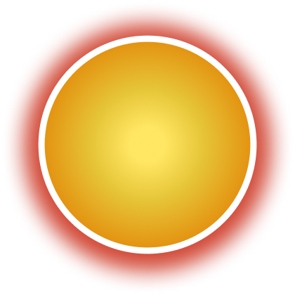
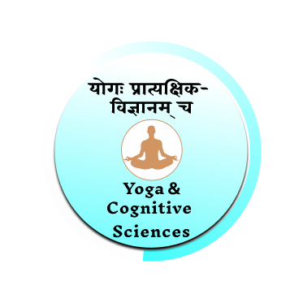
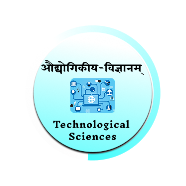
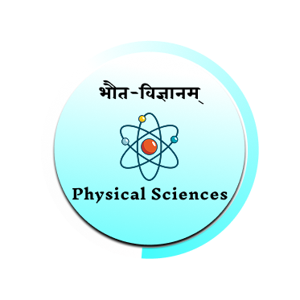

<!DOCTYPE html>
<html lang="en">
  <head>
    <meta charset="UTF-8" />
    <meta name="viewport" content="width=device-width, initial-scale=1.0" />
    <title>Branches of Science</title>
    <script src="https://cdn.tailwindcss.com"></script>
    <script src="../construct_url.js"></script>

    <style>
      body {
        overflow: hidden;
      }
      
      .bg-full {
        background-image: url("assets/bg-new.jpg");
        background-size: cover;
        background-position: center;
        background-repeat: no-repeat;
      }

      .circle-container {
        position: relative;
        width: 600px;
        height: 540px;
      }

      .circle-image {
        position: absolute;
        width: 250px;
        height: 240px;
        transform: translate(-50%, -50%);
        transition: transform 0.3s ease;
      }

      .circle-image:hover {
        transform: translate(-50%, -50%) scale(1.1);
        cursor: pointer;
      }

      .bg-circle {
        width: 300px;
        height: 300px;
      }

      .bg {
        width: 740px;
      }

    </style>

  </head>
  <body class="bg-full min-h-screen min-w-screen m-0 p-0"></body>

    <!-- Navigation -->
    <nav class="flex justify-end p-4 pr-16 text-xl text-white bg-[#7EFEFE] gap-9">
      <div
        class="flex gap-1 cursor-pointer items-center"
        onclick="window.location.href = document.URL.split('/').slice(0, -2).join('/')"
      >
        <i data-lucide="home" class="text-[#41476A]"></i>
        <p class="text-[#674C79]"><strong>Home</strong></p>
      </div>
    </nav>

    <div class="flex h-[calc(100vh-64px)] w-full justify-center items-center relative mt-4">

      <!-- Background Circles -->
      
      

      <!-- inside the center circle text -->
         <div class="absolute w-[340px] h-[340px] flex items-center justify-center text-[#4B2E1D] font-extrabold text-[1.4vw] text-center pointer-events-none ">
           Branches of <br> Sciences
         </div>

      <!-- Branch Circles -->
      <div class="circle-container">

        <!-- 1st -->
        

        <!-- 2nd -->
        

        <!-- 3rd -->
        

        <!-- 4th -->
        

        <!-- 5th -->
        

        <!-- 6th -->
         

        <!-- 7th -->
        

        <!-- 8th -->
        

      </div>
    </div>

    <script src="../../serverUrl.js"></script>
    <script src="../../dashboard.js"></script>
    <script>
      function positionCircles() {
        const container = document.querySelector(".circle-container");
        const radius = container.offsetWidth / 2 - 30;
        const centerX = container.offsetWidth / 2;
        const centerY = container.offsetHeight / 2;

        const images = document.querySelectorAll(".circle-image");
        const totalImages = images.length;
        const angleStep = 360 / totalImages;

        images.forEach((image, index) => {
          const angle = angleStep * index * (Math.PI / 180);
          const x = centerX + radius * Math.cos(angle);
          const y = centerY + radius * Math.sin(angle);
          image.style.left = `${x}px`;
          image.style.top = `${y}px`;
        });
      }

      // All 8 branches of sciences function are listed here including their sub topics too
      function hoverMathematics() {
        if (document.getElementById("circleMathematics").title === "fetching data")
          dashboard(
            "sciencetechnology",
            "/subs/sciencetechnology?subs=Algebra, Geometry, Trigonometry, Calculus",
            "circleMathematics"
          );
      }

      function hoverPhysicalSciences() {
        if (document.getElementById("circlePhysicalSciences").title === "fetching data")
          dashboard(
            "sciencetechnology",
            "/subs/sciencetechnology?subs=CosmologyAstronomy, Botany, Physics, Chemistry",
            "circlePhysicalSciences"
          );
      }

      function hoverEarthEnvironmentalSciences() {
        if (document.getElementById("circleMedicalEarthEnvironmentalSciences").title === "fetching data")
          dashboard(
            "sciencetechnology",
            "/subs/sciencetechnology?subs=GeologyGeography, EcologyEnvironment, Forestry",
            "circleEarthEnvironmentalSciences"
          );
      }
      
      function hoverSocialSciences() {
        if (document.getElementById("circleSocialSciences").title === "fetching data")
          dashboard(
            "sciencetechnology",
            "/subs/sciencetechnology?subs=MilitaryScience, AncientBharatiyaJurisprudence, PoliticalScience, TradeAndCommerce",
            "circleSocialSciences"
          );
      }

      function hoverYogaCognitiveSciences() {
        if (document.getElementById("circleYogaCognitiveSciences").title === "fetching data")
          dashboard(
            "sciencetechnology",
            "/subs/sciencetechnology?subs=Yoga, CognitiveSciences",
            "circleYogaCognitiveSciences"
          );
      }

      function hoverComputationalLanguageSciences() {
        if (document.getElementById("circleComputationalLanguageSciences").title === "fetching data")
          dashboard(
            "sciencetechnology",
            "/subs/sciencetechnology?subs=Linguistics, SemanticAnalysis, Encryption, CombinatoricsMnemonics",
            "circleComputationalLanguageSciences"
          );
      }

      function hoverHealthLifeSciences() {
        if (document.getElementById("circleHealthLifeSciences").title === "fetching data")
          dashboard(
            "sciencetechnology",
            "/subs/sciencetechnology?subs=Ayurveda, Botany, HorticultureFloriculture, VeterinaryAyurveda, FoodSciences, ScienceOfPulse",
            "circleHealthLifeSciences"
          );
      }

      function hoverTechnologicalSciences() {
        if (document.getElementById("circleTechnologicalSciences").title === "fetching data")
          dashboard(
            "sciencetechnology",
            "/subs/sciencetechnology?subs=Agriculture, WaterManagement, Metallurgy, CivilEngineeringArchitecture, MechanicalEngineering, TextileEngineering, Gemmology",
            "circleTechnologicalSciences"
          );
      }

      window.onload = positionCircles;
      window.onresize = positionCircles;
    </script>
  </body>
</html>
